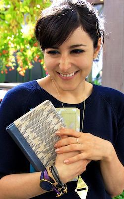

About Meredith
Meredith Turits was born in New York, and spent most of her youth riding the 6 train in and out of the East Village. She lives and writes in Park Slope, Brooklyn—and doesn’t yet own a stroller.
She is a magna cum laude graduate of Tufts University, where she studied Philosophy of Language and Linguistics. She earned a minor in Communications and Media Studies through Tufts and the School of the Museum of Fine Arts in Boston. Meredith served as the the Online Associate Editor at Glamour magazine from 2010 to 2013, where she oversaw lifestyle content, and Get Inspired, the inspiring women/politics channel. She spearheaded its launch in early 2012, and was lead writer and top editor of its anchor blog, The Conversation, which introduced content including politics, authors, current events, and influential women to the site's daily editorial lineup.
Meredith has also created a platform around her name outside of her work. Her personal blog, Such Small Hands, has several thousand followers, and she is an editor for Tumblr’s Prose, Lit, and Poetry tags. She tweets at @meredithturits.
Her short fiction has appeared or is forthcoming in The Squawk Back, Split Lip Magazine, Anobium, Podium Literary Journal, Millennials magazine, and she is a fiction writer in residence at collective five by five hundred. Her non-fiction, reporting, and personal essays have appeared or are forthcoming in publications including Glamour,The Nervous Breakdown, Full Stop , Bookslut Gothamist, F'd in Park Slope, Performer, and Skyscraper. She is at work on a second novel, and continues to write personal essays, profiles, and non-fiction articles.
Meredith is (honestly) delighted to hear from you with opportunities, questions, comments, or to simply say hi. She (also honestly) asks that you do not contact her gmail address with PR pitches—especially if you want a response.